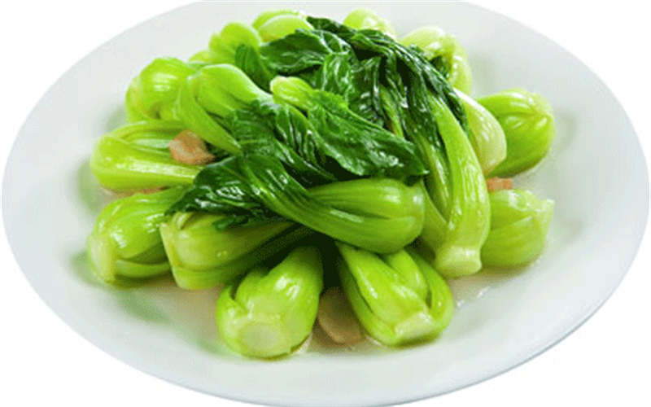

Bok Choi
Japanese Vegetarian
Five week course in London
A five week introduction to traditional Japanese vegetarian meals, teaching you a selection of rice and noodle dishes.
YOKO'S KITCHEN
JAPANESE COOKING CLASSES
Bok Choi
A five week introduction to traditional Japanese vegetarian meals, teaching you a selection of rice and noodle dishes.

Teriyaki Sauce
An intensive one-day course looking at how to create the most delicious sauces for use in a range of Japanese cookery.